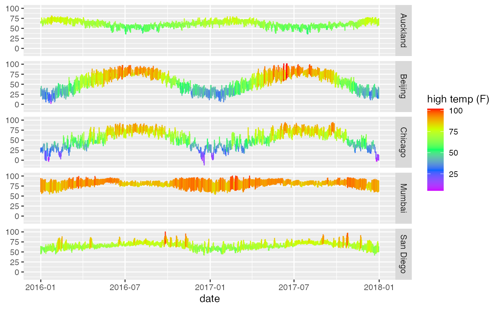

For each x value, geom_ribbon() displays a y interval defined
by ymin and ymax. geom_area() is a special case of
geom_ribbon(), where the ymin is fixed to 0 and y is used instead
of ymax.
gf_area( object = NULL, gformula = NULL, data = NULL, ..., alpha, color, fill, group, linetype, size, xlab, ylab, title, subtitle, caption, geom = "area", stat = "identity", position = "identity", show.legend = NA, show.help = NULL, inherit = TRUE, environment = parent.frame() )
| object | When chaining, this holds an object produced in the earlier portions of the chain. Most users can safely ignore this argument. See details and examples. |
|---|---|
| gformula | A formula with shape |
| data | The data to be displayed in this layer. There are three options: If A A |
| ... | Additional arguments. Typically these are
(a) ggplot2 aesthetics to be set with |
| alpha | Opacity (0 = invisible, 1 = opaque). |
| color | A color or a formula used for mapping color. |
| fill | A color for filling, or a formula used for mapping fill. |
| group | Used for grouping. |
| linetype | A linetype (numeric or "dashed", "dotted", etc.) or a formula used for mapping linetype. |
| size | A numeric size or a formula used for mapping size. |
| xlab | Label for x-axis. See also |
| ylab | Label for y-axis. See also |
| title | Title, sub-title, and caption for the plot.
See also |
| subtitle | Title, sub-title, and caption for the plot.
See also |
| caption | Title, sub-title, and caption for the plot.
See also |
| geom | A character string naming the geom used to make the layer. |
| stat | The statistical transformation to use on the data for this layer, as a string. |
| position | Position adjustment, either as a string, or the result of a call to a position adjustment function. |
| show.legend | logical. Should this layer be included in the legends?
|
| show.help | If |
| inherit | A logical indicating whether default attributes are inherited. |
| environment | An environment in which to look for variables not found in |
if (require(dplyr) && require(mosaicData)) { Temps <- Weather %>% filter(city == "Chicago", year == 2016, month <= 4) gf_linerange(low_temp + high_temp ~ date, color = ~high_temp, data = Temps) gf_ribbon(low_temp + high_temp ~ date, data = Temps, color = "navy", alpha = 0.3) gf_area(high_temp ~ date, data = Temps, color = "navy", alpha = 0.3) gf_ribbon(low_temp + high_temp ~ date, data = Weather, alpha = 0.3) %>% gf_facet_grid(city ~ .) gf_linerange(low_temp + high_temp ~ date, color = ~high_temp, data = Weather) %>% gf_facet_grid(city ~ .) %>% gf_refine(scale_colour_gradientn(colors = rev(rainbow(5)))) }#>#> #>#> #> #>#> #> #>#> #> #>